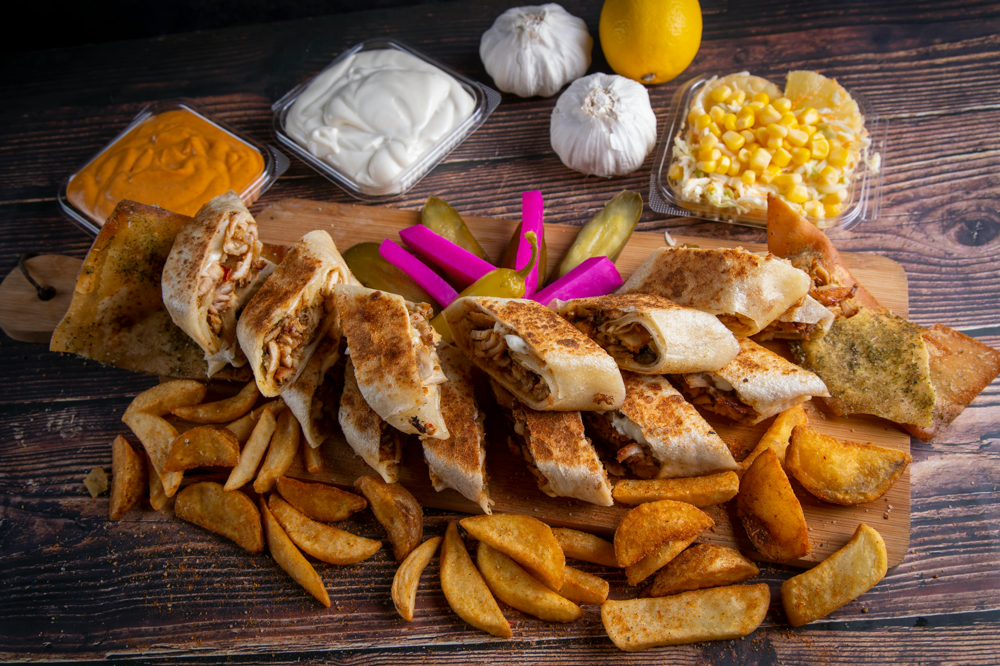

This is a recipe for Shawarma.
It is a popular street food in the Middle East that originated in the Levant during the Ottoman Empire. It consists of meat cut into thin slices, stacked in an inverted cone, and roasted on a slow-turning vertical spit.
Traditionally made with lamb or mutton, it may also be made with chicken, turkey meat, beef, falafel or veal. The surface of the rotisserie meat is routinely shaved off once it cooks and is ready to be served. Shawarma is a popular street food throughout the Arab world, Israel and the Greater Middle East.
The technique of shawarma—grilling a vertical stack of meat slices and cutting it off as it cooks—first appeared during the Ottoman Empire in the 19th century in the form of döner kebab, which both the Greek gyros and the Levantine shawarma are derived from.
The innovation of this technique is credited by Encyclopedia Britannica to a 19th-century Turkish butcher named Iskender, whose shop in Bursa offered grilled meats that were layered on the vertical spit and slowly carved off into pieces.
Back to the main page here